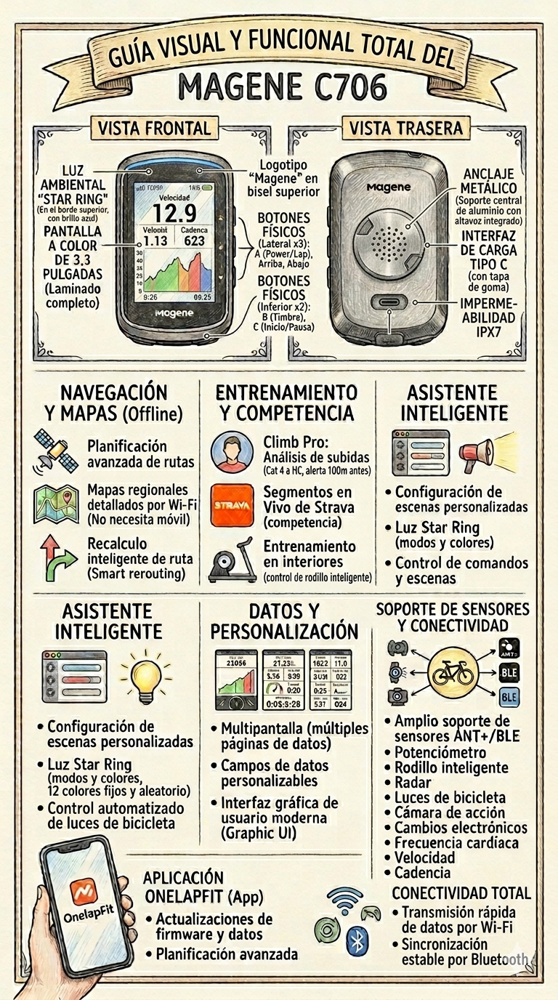

Esquema Visual y Resumen
Bienvenido al manual interactivo del ciclocomputador GPS inteligente Magene C706.

Utilice el menú lateral para navegar por las diferentes funciones del dispositivo, o utilice la barra de búsqueda para encontrar configuraciones específicas rápidamente.
Montaje y Carga
Pasos de Instalación
- Paso 1: Coloque el soporte en el manillar.
- Paso 2: Asegure el soporte con las bandas de goma.
- Paso 3: Instale el ciclocomputador siguiendo la dirección indicada por la flecha y gírelo.
- Paso 4: Instalación completada.
Instrucciones de Carga
- Retire la almohadilla de goma en el centro de la parte inferior para conectar el cable.
- La interfaz de carga es de tipo USB-C.
- El tiempo de carga es de aproximadamente 3 horas y soporta carga mientras está en uso.
- Cuando la batería está baja, el ícono en la esquina superior derecha se volverá rojo y emitirá una alerta.
Operación Básica y Botones
Encendido y Apagado
Para encender, mantenga pulsado el botón superior izquierdo (A). Para apagar, mantenga pulsado el mismo botón cuando no se esté grabando ninguna ruta. El dispositivo no se puede apagar mientras una grabación esté activa.
Funciones de los Botones
| Botón | Pulsación Corta (Sin Ruta) | Pulsación Corta (En Ruta) |
|---|---|---|
| A (Arriba) | Retorno / Apagar pantalla | Vueltas (Laps) |
| B (Abajo Izq.) | Sin función específica | Timbre |
| C (Abajo Der.) | Iniciar ruta / Confirmar | Pausar / Continuar ruta |
Bloqueo de Pantalla
Durante la grabación, mantenga pulsado el botón A para acceder al menú y seleccione "Bloquear pantalla" mediante el botón C. El dispositivo se desbloquea manteniendo pulsado el botón A nuevamente.
App OnelapFit y Sensores
Activación del Dispositivo
Después del primer encendido, seleccione el idioma para mostrar un código QR. Escanéelo usando la aplicación OnelapFit para completar la activación y vinculación. Las actualizaciones de firmware se buscan automáticamente por Wi-Fi o Bluetooth.
Sensores Compatibles (ANT+ / BLE)
Se admiten los siguientes tipos de sensores: frecuencia cardíaca, velocidad, cadencia, potencia, rodillo, radar, cambios electrónicos, luces y cámaras.
- Luces: Se pueden conectar hasta 5 luces ANT+ simultáneamente.
- Radares: Al conectarse, puede elegir mostrar las alertas de tráfico en el lado izquierdo o derecho de la pantalla.
- Cámaras de acción: Soporta modelos como DJI Action 4/5 Pro y Insta360 X4/X5. Se puede controlar la grabación directamente desde la pantalla del C706.
Climb Pro, Segmentos y Entrenamientos
Función Climb Pro
Define una subida cuando la longitud es ≥ 400m y la pendiente promedio es ≥ 2.5%. Las subidas se clasifican mediante una puntuación (Longitud x Pendiente) en:
- Cat4: 1000 a 2399.
- Cat3: 2400 a 6999.
- Cat2: 7000 a 14999.
- Cat1: 15000 a 23999.
- HC: Mayor o igual a 24000.
El dispositivo avisará 100 metros antes de comenzar el ascenso.
Segmentos Strava
El C706 soporta segmentos Strava favoritos (requiere suscripción). Al acercarse, muestra la distancia restante y puede comparar el tiempo con su PR o el KOM/QOM.
Entrenamiento Libre Indoor
Ofrece tres modos para rodillos inteligentes: Potencia Objetivo (40%-150% FTP), Modo de Resistencia (0%-100%) y Modo de Grado/Pendiente (0%-20%).
Star Ring y Asistente Inteligente
Luz Ambiental Star Ring
La franja luminosa frontal soporta modos y colores personalizables.
- Modos: Encendido fijo, Respiración y Parpadeo.
- Colores: 12 colores fijos o modo aleatorio (cambia de color cada 15 segundos).
- En el modo de batería de larga duración, el Star Ring se desactiva automáticamente.
Asistente Inteligente y Comandos
Permite crear escenarios automatizados. Por ejemplo:
- Si la frecuencia cardíaca supera los 180 BPM, emitir una alerta sonora.
- Apagar o encender las luces de la bicicleta automáticamente basándose en condiciones de luz o velocidad.
Notificaciones de Mensajes
Activando los permisos en OnelapFit, el C706 puede recibir llamadas y mensajes del teléfono. Si está en modo "No molestar", las ventanas emergentes no se mostrarán en pantalla.
Resolución de Problemas (FAQ)
El equipo no enciende o está congelado
- Verifique si hay animación de carga; si aparece, cárguelo por 15-30 minutos.
- Para un reinicio forzado, mantenga pulsados simultáneamente los dos botones físicos inferiores durante 20 segundos hasta escuchar un pitido.
Problemas de Posicionamiento GPS
- Asegúrese de estar en modo exterior (el modo indoor desactiva el GPS).
- Sincronice los datos de satélites AGNSS mediante Wi-Fi o OnelapFit para acelerar el proceso.
Los mapas no se muestran
- Asegúrese de que el archivo descargado aparezca "En uso".
- Revise la escala: la red completa de calles solo es visible en escalas de 50m a 200m. Entre 500m y 20km solo se ven carreteras principales.